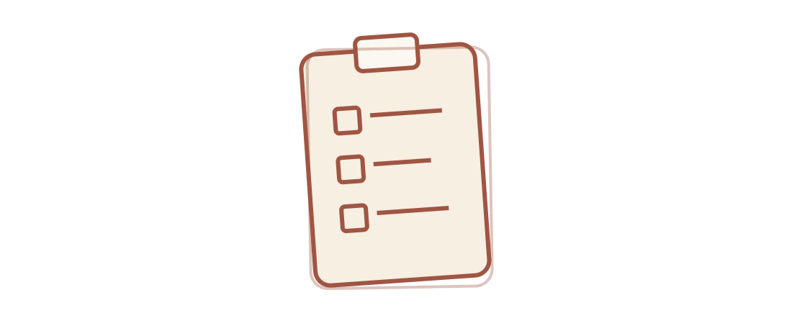
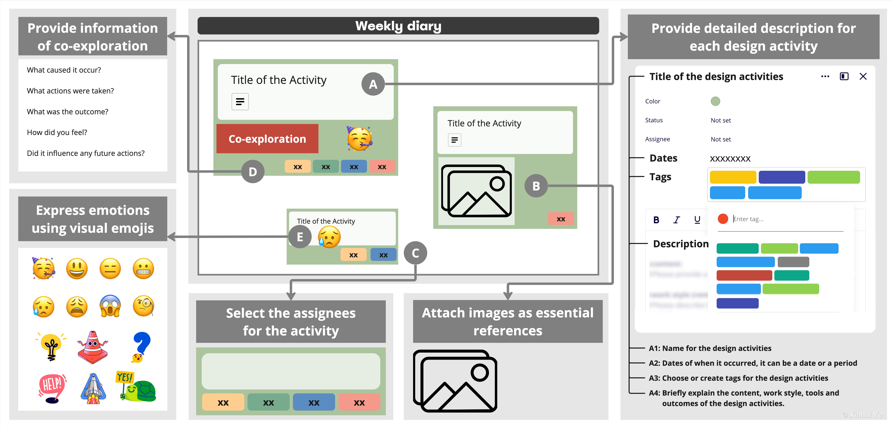
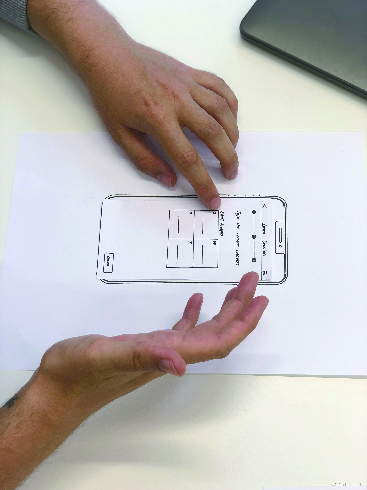

Three projects,
start to finish.
Each one owned end to end — the question, the research, the design, and the story that moves stakeholders. Every project branches into a longer story on my site, if you want the detail.
Nisse — a calm home for the chores nobody sees
A home-management app for couples that makes invisible work visible — without turning a relationship into a scoreboard. I found the idea, did the research, set the visual system, and am building it with a front-end engineer, using AI tools to stay close to the real screen.
Concept, research, UX/UI, art direction
Competitive mapping, wireframing, visual systems
Me + a front-end engineer
In build — live prototype

The problem, grounded in research
Sociologist Allison Daminger's interviews with 35 couples show cognitive household labor — noticing, planning, remembering — lands on one person by default: women led in 26 of 32 couples. I mapped 20 existing products against two questions: who does the noticing, and when ownership gets fixed. Nearly every tool quietly hands one person the clipboard.
One structural decision
Tasks are born ownerless in a shared pool and claimed at pickup — never assigned at creation. Chores carry a rhythm ("every ~2 weeks"), not a deadline. A monthly mirror shows how work distributed itself — a conversation starter, never a verdict. Removing the "assign to" field did more for fairness than any fairness feature could.


A visual system where load becomes area
Each life-zone of the home is an organic blob sized by its current workload — you feel a heavy kitchen before reading a word. Muted hues coexist without noise; a small edge dot carries state, and red is reserved strictly for genuinely overdue. Copy stays qualitative: "mostly calm", never 73%.
"Structure is ethics. The most consequential design decision in Nisse is a missing form field."
Five months inside 16 design teams
The most complex study I have designed and run: a longitudinal mixed-method observation of how teams explore ideas together, following 61 participants through their entire design process. Designed end to end — objectives, instruments, fieldwork, analysis, and the storytelling that carried it into a Q1 journal.
Sole researcher — design to publication
Diary study, weekly interviews, card-based reflection, statistics
61 participants · 16 teams · 5 months
"Beyond Divergence", She Ji (Q1)

Instruments people enjoyed using
Each week every team documented their activities in a shared visual diary — descriptions, images, assignees, emotions — then walked me through it in a group interview. For the closing reflection I turned their digital entries into physical cards. Participants said the weekly reflection made them better teammates; several said it beat their regular coaching sessions.
From 1,562 activities to five patterns
The data — 1,562 documented activities, 78 hours of audio — was mapped onto a four-dimensional analytical framework I built, revealing five distinct patterns of co-exploration. Thriving teams co-explored more often and in more varied ways than struggling ones, and the statistics confirmed the contrast.



"Five distinct patterns of co-exploration… actionable insights for professional designers as well as design educators."
AI&U — language learning that learns you first
My graduation project: a concept for an adaptive language-learning platform that builds a live model of the learner — level, goals, focus rhythms, mood — and shapes every lesson from it. Five months with Chiara Mayer, from expert interviews to paper prototypes to concept films. Graded sehr gut, the top grade.
Research, concept, UX, screens, film
Expert interviews, paper prototyping, user testing
Duo, 5 months
sehr gut · public demo days

Research before designing
Before drawing a screen, we interviewed the people who knew the territory — language teachers, online-learning researchers, a digital-twin engineer, an AI researcher at DFKI — and each conversation took a wrong assumption off the table. Ideas stayed cheap: flowcharts, cut-paper screens, a throwaway click path.
Test rough, watch closely
We put the paper prototype in front of real learners and stopped talking — watching someone hesitate says more than asking what they think. Whatever made people pause for the wrong reason got rebuilt. Short films placed the concept in everyday moments — a commute, a work call to prep for — instead of a feature list.


"Most tools teach everyone the same way. AI&U works the other way around: it learns who you are first."